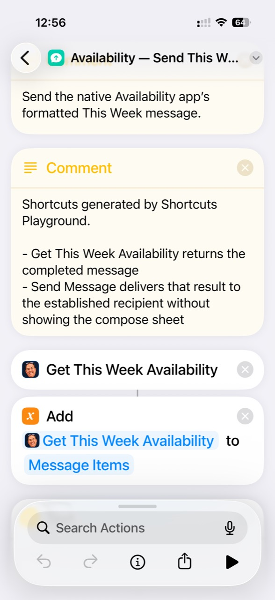
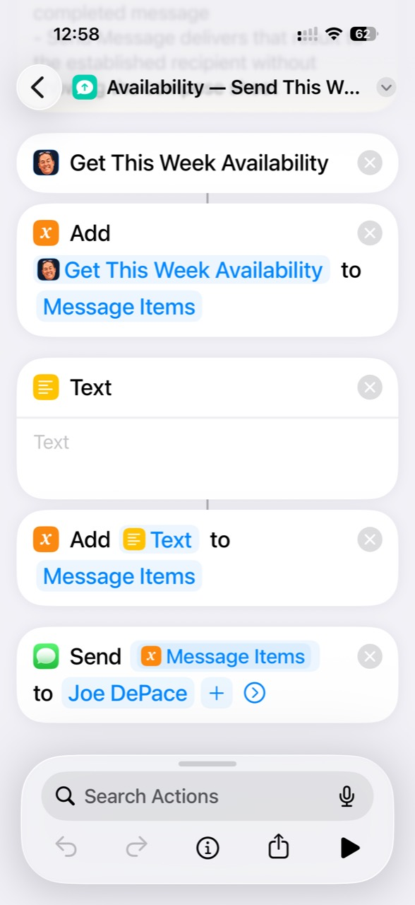
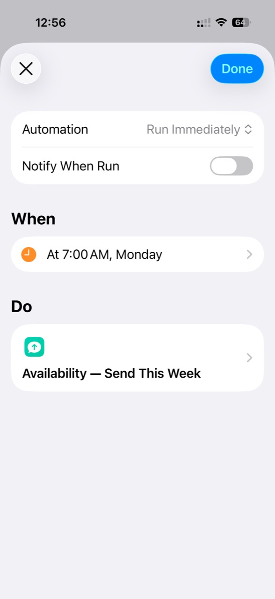
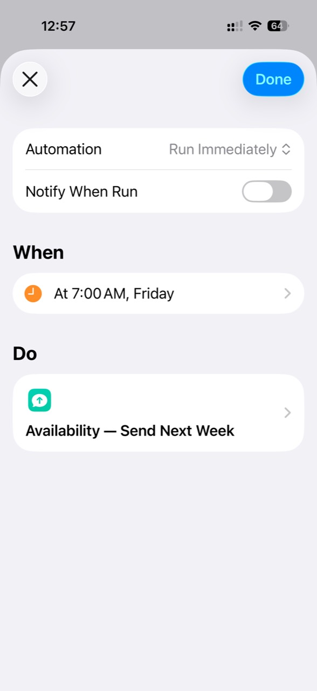

This week or next week
This Week runs from the current time through Friday. Next Week covers Monday through Friday.
Native iPhone App
Turn a busy calendar into clear time windows you can review and share—without manually comparing every appointment.

Availability uses EventKit to read your selected iPhone calendars and find free time within your configured working hours. It can include travel time and prepares a formatted availability message for This Week or Next Week.
This Week runs from the current time through Friday. Next Week covers Monday through Friday.
Event locations, the chosen travel mode, and the travel buffer help protect the time needed between commitments.
Displayed windows are rounded to the nearest five minutes, and windows shorter than 60 minutes are left out.
When you use the app manually, you can review the generated result before sending. With Apple Shortcuts, you can choose review first or optional automatic sending.
Designed as a native iPhone app. It uses calendars and event locations available on the user’s iPhone and prepares its result for Apple Messages.
Availability is available on the App Store.
You don’t have to open Availability manually every time. Open the app, run a Shortcut, or let a scheduled automation do it for you.
Generate This Week or Next Week availability, review the result, and send it when you’re ready.
Use a native Availability action to generate the formatted message. Pass it to other Shortcuts actions to display it for review or send it to your chosen recipient.
Use a Personal Automation in Apple Shortcuts to run your Shortcut on a schedule. Automatic sending is optional—you can keep a review step instead.
Availability provides two native actions: Get This Week Availability and Get Next Week Availability. Each returns the completed, formatted availability message for other Shortcuts actions to use.
Availability action → formatted message → Send Message
For review first, create a Shortcut that generates or displays the result before you choose to send. The examples below use direct sending: Send Message delivers the result to your chosen recipient without showing a compose sheet. Select a screenshot to view it at full size.
Get This Week Availability adds its result to Message Items. An empty Text separator is then added to Message Items, and Send Message sends the completed items to the chosen recipient.


Apple Shortcuts Personal Automations can run either Shortcut on a schedule. These examples send this week’s availability on Monday and next week’s availability on Friday.


Run Immediately allows the automation to execute without asking each time. Notify When Run can be disabled, as shown here.
With Send Message configured to deliver the Availability result directly, generation and sending can be fully automatic. Automatic sending is optional: choose a Shortcut that generates or displays the result for review if you prefer to decide when to send.
{kind=link}
{kind=link}
{kind=link}
{kind=link}
{kind=link}